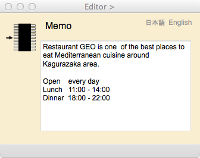

Memo Editor
メモの編集
このページは，メモを編集するためにあります．メモは，複数の文からなるパラグラフであり，CharacterStringより長い文章を記憶します．ただし，データ型である Memo は CharacterString を継承しています.メモを属性にするには，Editor ページでadd ボタンを押します．
メモボックスの中のレイアウトはユーザにまかされている．
操作画面

図1. Memo Editorの操作画面
表示欄
Memo（編集可能）
このボックスにメモを記入します．また，すでにメモ属性がある場合はここに表示されます．メモの中で引用符 (quotation mark) を使うときは，必ず単一引用符 (single quotation mark)にしてください．二重引用符を使うことはできません．
ボタン
日本語
今あなたが読んでいるドキュメントが表示されます．
English
You can read the tutorial written in English.